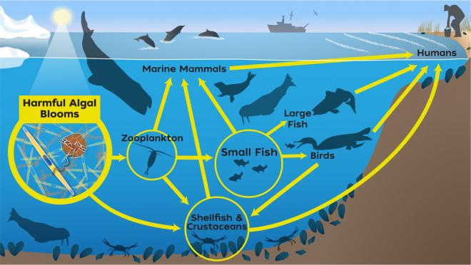
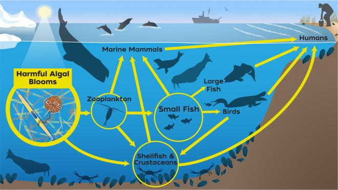

Glaucus Atlanticus
This tiny sea slug floats upside down on the ocean’s surface, using surface tension to stay afloat. Its vivid blue coloration helps it blend in with the water and avoid predators. Despite its size, it feeds on venomous prey like the Portuguese man o’ war and stores their stingers for its own defense.
Dumbo Octopus
Named for its ear-like fins that resemble Disney’s Dumbo, this deep-sea octopus lives at depths over 13,000 feet. It glides gracefully through the water by flapping its fins and pulsing its arms. Unlike many octopuses, it swallows prey whole instead of tearing it apart.
Leafy Seadragon
This master of disguise looks like a drifting piece of seaweed thanks to its leafy appendages. It belongs to the same family as seahorses and uses its camouflage to avoid predators. Found off the southern coast of Australia, it moves slowly and relies on stealth rather than speed.
Deep Sea Discovery Video
Food Chain Diagrams
Goblin Shark
The goblin shark is a rare deep-sea species with a long, flattened snout and extendable jaws. It can thrust its jaws forward to snatch prey with lightning speed. Often called a “living fossil,” it has remained relatively unchanged for millions of years.
Peacock Mantis Shrimp

This colorful crustacean packs one of the fastest punches in the animal kingdom — strong enough to crack glass. It has incredibly complex eyes that can detect polarized light and see more colors than humans. Despite its small size, it’s a fierce and intelligent predator.
Frilled Shark
The frilled shark is a deep-sea predator with a long, eel-like body and rows of needle-sharp teeth. It rarely encounters humans and is considered one of the most primitive living sharks. Its flexible jaws allow it to swallow prey whole, even if it's half its size.
Deep Sea Discovery Video
Food Chain Diagrams
Barreleye Fish
This deep-sea fish has a transparent head that reveals its tubular, rotating eyes. Its eyes can point upward to spot prey silhouetted against the faint light above. The barreleye’s bizarre anatomy helps it survive in the pitch-black depths of the ocean.
Christmas Tree Worm
Named for its spiral, tree-like plumes, this worm lives embedded in coral and uses its “branches” to filter food from the water. It comes in vibrant colors like orange, blue, and white. When threatened, it retracts instantly into its burrow for protection.
Vampire Squid
Despite its spooky name, the vampire squid doesn’t suck blood — it feeds on marine snow, a mix of organic debris. It has webbed arms and bioluminescent displays that confuse predators in the deep sea. Its name comes from its dark coloration and cloak-like appearance.
Deep Sea Discovery Video
Food Chain Diagrams
 
